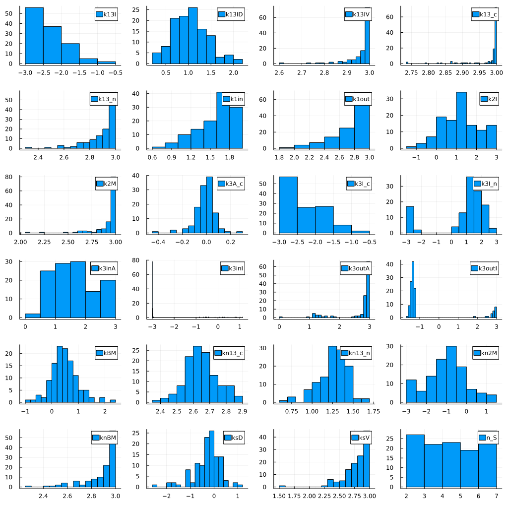
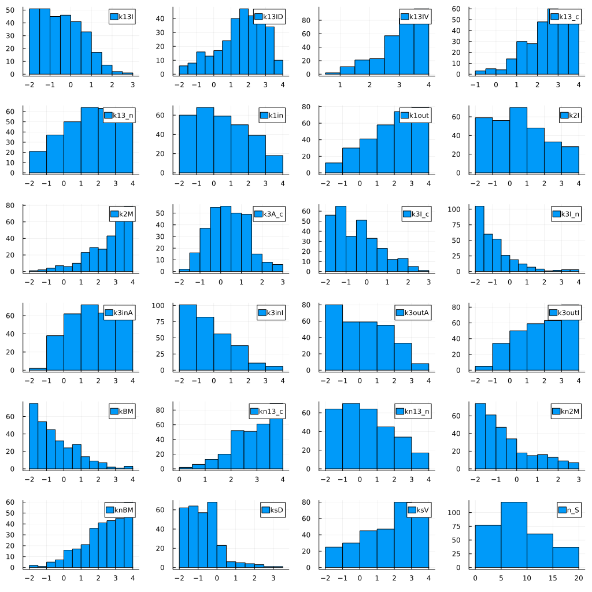

Model descriptions
Contents
Model descriptions#
The Mitochondrial Retrograde (RTG) Signalling Model is a system of 11 coupled ODEs.
using RetroSignalModel
using ModelingToolkit
@named sys = RtgMTK(; simplify=false)
┌ Info: Precompiling RetroSignalModel [8bac15de-65a1-44a4-8b6e-7c4bf648ff0c]
└ @ Base loading.jl:1662
\[\begin{split} \begin{align}
\frac{dRtg2A_{c(t)}}{dt} =& - v(t)_2 + v(t)_1 \\
\frac{dRtg2Mks_{c(t)}}{dt} =& v(t)_2 \\
\frac{dBmhMks(t)}{dt} =& v(t)_3 \\
\frac{dRtg13A_{c(t)}}{dt} =& - v(t)_4 + v(t)_7 \\
\frac{dRtg13I_{c(t)}}{dt} =& v(t)_4 + v(t)_8 \\
\frac{dRtg3A_{c(t)}}{dt} =& - v(t)_7 - v(t)_{1 2} + v(t)_5 \\
\frac{dRtg3A_{n(t)}}{dt} =& - v(t)_6 - v(t)_9 + v(t)_{1 2} \\
\frac{dRtg3I_{n(t)}}{dt} =& - v(t)_{1 0} + v(t)_6 + v(t)_{1 3} \\
\frac{dRtg1_{n(t)}}{dt} =& - v(t)_9 - v(t)_{1 0} + v(t)_{1 1} \\
\frac{dRtg13A_{n(t)}}{dt} =& v(t)_9 \\
\frac{dRtg13I_{n(t)}}{dt} =& v(t)_{1 0} \\
s\left( t \right) =& 0 \\
v(t)_1 =& \frac{\left( mul_{S} s\left( t \right) \right)^{n_{S}} ksV \mathrm{Rtg2I}_{c}\left( t \right)}{ksD^{n_{S}} + \left( mul_{S} s\left( t \right) \right)^{n_{S}}} - k2I \mathrm{Rtg2A}_{c}\left( t \right) \\
v(t)_2 =& k2M \mathrm{Mks}\left( t \right) \mathrm{Rtg2A}_{c}\left( t \right) - kn2M \mathrm{Rtg2Mks}_{c}\left( t \right) \\
v(t)_3 =& - knBM \mathrm{BmhMks}\left( t \right) + kBM \mathrm{Bmh}\left( t \right) \mathrm{Mks}\left( t \right) \\
v(t)_4 =& \left( k13I + \frac{k13IV \mathrm{BmhMks}\left( t \right)}{k13ID + \mathrm{BmhMks}\left( t \right)} \right) \mathrm{Rtg13A}_{c}\left( t \right) \\
v(t)_5 =& k3A_{c} \mathrm{Rtg3I}_{c}\left( t \right) - k3I_{c} \mathrm{Rtg3A}_{c}\left( t \right) \\
v(t)_6 =& k3I_{n} \mathrm{Rtg3A}_{n}\left( t \right) \\
v(t)_7 =& - kn13_{c} \mathrm{Rtg13A}_{c}\left( t \right) + k13_{c} \mathrm{Rtg1}_{c}\left( t \right) \mathrm{Rtg3A}_{c}\left( t \right) \\
v(t)_8 =& - kn13_{c} \mathrm{Rtg13I}_{c}\left( t \right) + k13_{c} \mathrm{Rtg1}_{c}\left( t \right) \mathrm{Rtg3I}_{c}\left( t \right) \\
v(t)_9 =& - kn13_{n} \mathrm{Rtg13A}_{n}\left( t \right) + k13_{n} \mathrm{Rtg1}_{n}\left( t \right) \mathrm{Rtg3A}_{n}\left( t \right) \\
v(t)_{1 0} =& - kn13_{n} \mathrm{Rtg13I}_{n}\left( t \right) + k13_{n} \mathrm{Rtg1}_{n}\left( t \right) \mathrm{Rtg3I}_{n}\left( t \right) \\
v(t)_{1 1} =& k1in \mathrm{Rtg1}_{c}\left( t \right) - k1out \mathrm{Rtg1}_{n}\left( t \right) \\
v(t)_{1 2} =& k3inA \mathrm{Rtg3A}_{c}\left( t \right) - k3outA \mathrm{Rtg3A}_{n}\left( t \right) \\
v(t)_{1 3} =& k3inI \mathrm{Rtg3I}_{c}\left( t \right) - k3outI \mathrm{Rtg3I}_{n}\left( t \right) \\
\mathrm{Rtg13}_{n}\left( t \right) =& \mathrm{Rtg13A}_{n}\left( t \right) + \mathrm{Rtg13I}_{n}\left( t \right) \\
\mathrm{Rtg13}_{c}\left( t \right) =& \mathrm{Rtg13A}_{c}\left( t \right) + \mathrm{Rtg13I}_{c}\left( t \right) \\
\mathrm{Rtg3}_{n}\left( t \right) =& \mathrm{Rtg13}_{n}\left( t \right) + \mathrm{Rtg3A}_{n}\left( t \right) + \mathrm{Rtg3I}_{n}\left( t \right) \\
\mathrm{Rtg3}_{c}\left( t \right) =& \mathrm{Rtg13}_{c}\left( t \right) + \mathrm{Rtg3A}_{c}\left( t \right) + \mathrm{Rtg3I}_{c}\left( t \right) \\
\mathrm{{\Sigma}Rtg1}_{n}\left( t \right) =& \mathrm{Rtg13}_{n}\left( t \right) + \mathrm{Rtg1}_{n}\left( t \right) \\
\mathrm{{\Sigma}Rtg1}_{c}\left( t \right) =& \mathrm{Rtg13}_{c}\left( t \right) + \mathrm{Rtg1}_{c}\left( t \right) \\
{\Sigma}Rtg1 =& \mathrm{Rtg13A}_{c}\left( t \right) + \mathrm{Rtg13A}_{n}\left( t \right) + \mathrm{Rtg13I}_{c}\left( t \right) + \mathrm{Rtg13I}_{n}\left( t \right) + \mathrm{Rtg1}_{c}\left( t \right) + \mathrm{Rtg1}_{n}\left( t \right) \\
{\Sigma}Rtg2 =& \mathrm{Rtg2A}_{c}\left( t \right) + \mathrm{Rtg2I}_{c}\left( t \right) + \mathrm{Rtg2Mks}_{c}\left( t \right) \\
{\Sigma}Rtg3 =& \mathrm{Rtg13A}_{c}\left( t \right) + \mathrm{Rtg13A}_{n}\left( t \right) + \mathrm{Rtg13I}_{c}\left( t \right) + \mathrm{Rtg13I}_{n}\left( t \right) + \mathrm{Rtg3A}_{c}\left( t \right) + \mathrm{Rtg3A}_{n}\left( t \right) + \mathrm{Rtg3I}_{c}\left( t \right) + \mathrm{Rtg3I}_{n}\left( t \right) \\
{\Sigma}Mks =& \mathrm{BmhMks}\left( t \right) + \mathrm{Mks}\left( t \right) + \mathrm{Rtg2Mks}_{c}\left( t \right) \\
{\Sigma}Bmh =& \mathrm{Bmh}\left( t \right) + \mathrm{BmhMks}\left( t \right)
\end{align}
\end{split}\]
Parameter estimation#
Simulated annealing (SAMIN) with bounds was used to find a set of parameters that fit exprerimental conditions.
using RetroSignalModel
using Optim
optim_params(targetratio=2, optimoptions=Optim.Options(iterations=100, show_trace=true, show_every=10))
Iter Function value Gradient norm
0 3.010304e-01 NaN
* time: 31.10527205467224
10 3.010306e-01 NaN
* time: 33.59766387939453
20 6.922298e-01 NaN
* time: 34.29135203361511
30 3.507041e-01 NaN
* time: 34.845494985580444
40 3.501560e-01 NaN
* time: 35.58637309074402
50 5.455609e-01 NaN
* time: 36.11997103691101
60 5.459495e-01 NaN
* time: 36.83245897293091
70 8.103469e-01 NaN
* time: 37.40064001083374
80 7.999396e-01 NaN
* time: 38.115010023117065
90 7.808383e-01 NaN
* time: 38.68662786483765
================================================================================
SAMIN results
NO CONVERGENCE: MAXEVALS exceeded
Obj. value: 0.29581
parameter search width
3.33029 5.00000
804.40887 999.99900
858.48192 999.99900
148.40605 999.99900
93.13653 999.99900
750.02059 999.99900
225.70406 999.99900
583.72277 999.99900
855.19219 999.99900
205.81075 999.99900
815.06341 999.99900
322.28386 999.99900
127.69204 999.99900
627.12362 999.99900
515.76787 999.99900
644.96065 999.99900
136.60803 999.99900
607.14910 999.99900
973.39218 999.99900
163.22225 999.99900
104.70160 999.99900
612.23314 999.99900
478.51412 999.99900
228.71696 999.99900
================================================================================
(res = * Status: failure (reached maximum number of iterations)
* Candidate solution
Final objective value: 2.958068e-01
* Found with
Algorithm: SAMIN
* Convergence measures
|x - x'| = NaN ≰ 0.0e+00
|x - x'|/|x'| = NaN ≰ 0.0e+00
|f(x) - f(x')| = NaN ≰ 0.0e+00
|f(x) - f(x')|/|f(x')| = NaN ≰ 0.0e+00
|g(x)| = NaN ≰ 0.0e+00
* Work counters
Seconds run: 39 (vs limit Inf)
Iterations: 100
f(x) calls: 100
∇f(x) calls: 0
, parammap = Dict{Sym{Real, Base.ImmutableDict{DataType, Any}}, Float64}(k3outA => 104.70160285394378, k3inA => 612.2331417809575, k13I => 205.81074524361608, kBM => 225.70405593563467, ksD => 148.4060468688242, k1in => 163.2222521157484, k3I_c => 322.28386448383617, k13IV => 815.0634053456588, k3A_c => 127.69204216478556, kn13_c => 644.9606492277871…))
Valid parameter sets#
using RetroSignalModel
using CSV
using DataFrames
using Plots
filename = joinpath(dirname(pathof(RetroSignalModel)), "data", "solution_rtgMTK_optim.csv")
dfoptim = let
df = CSV.read(filename, DataFrame)
df[!, Not(:n_S)] .= log10.(df[!, Not(:n_S)])
end
res = map(sort(names(dfoptim))) do lab
histogram(dfoptim[!, lab], label=lab)
end
plot(res..., layout=(6, 4), size=(1024, 1024))
# savefig("optimparams.png")

filename = joinpath(dirname(pathof(RetroSignalModel)), "data", "solution_rtgM4.csv")
dforig = let
df = CSV.read(filename, DataFrame)
df[!, Not(:n_S)] .= log10.(df[!, Not(:n_S)])
end
res = map(sort(names(dforig))) do lab
histogram(dforig[!, lab], label=lab)
end
plot(res..., layout=(6, 4), size=(1024, 1024))
# savefig("randomparams.png")
